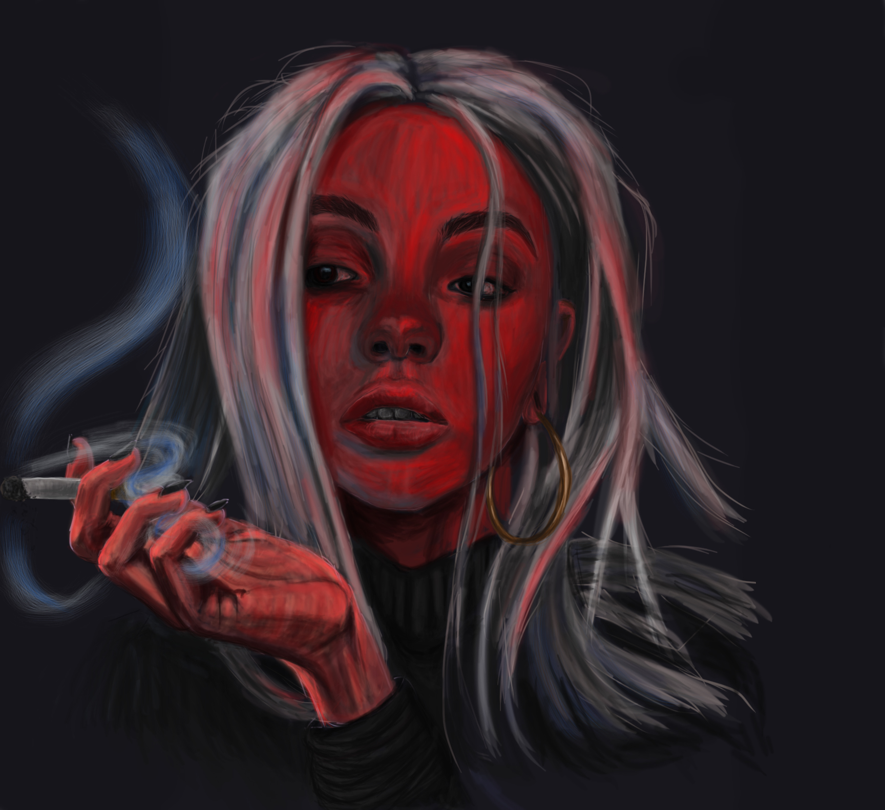
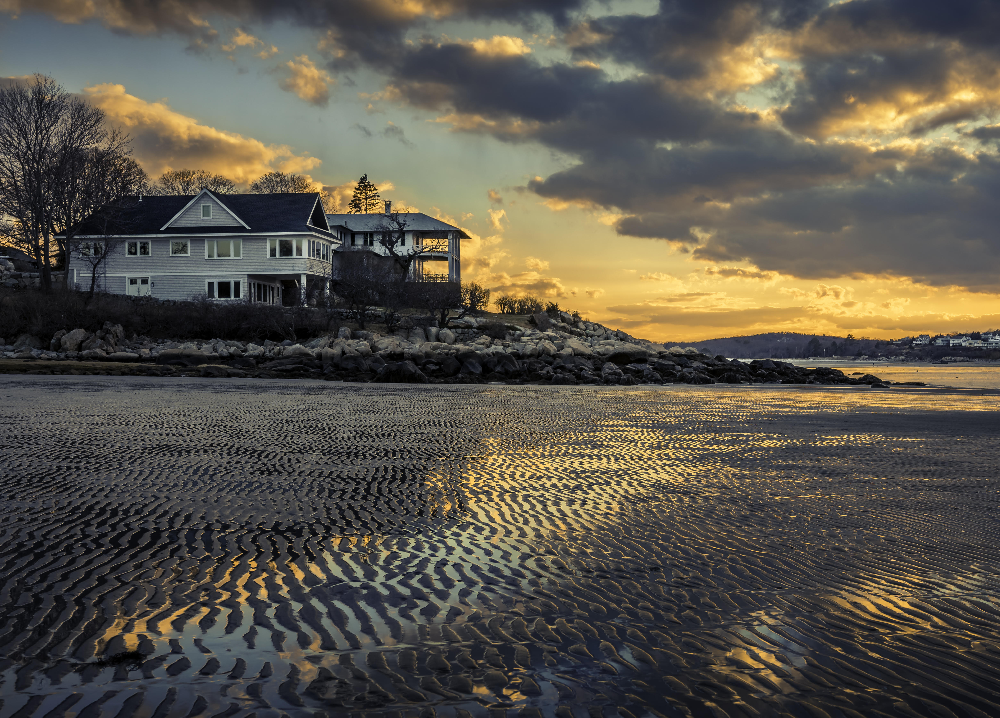
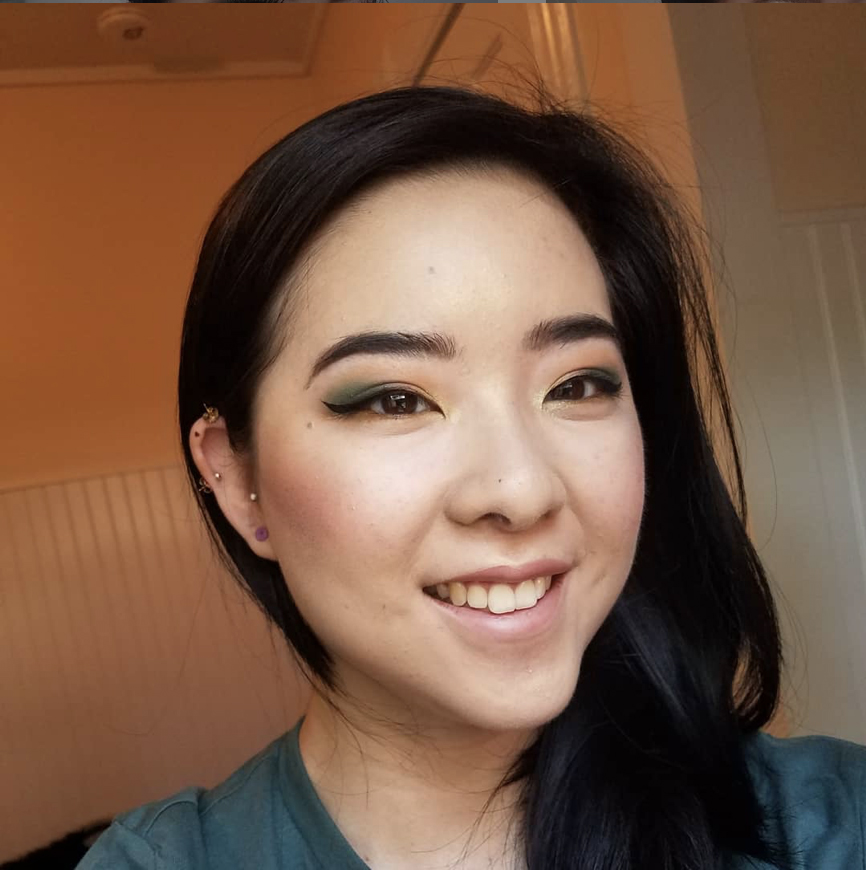
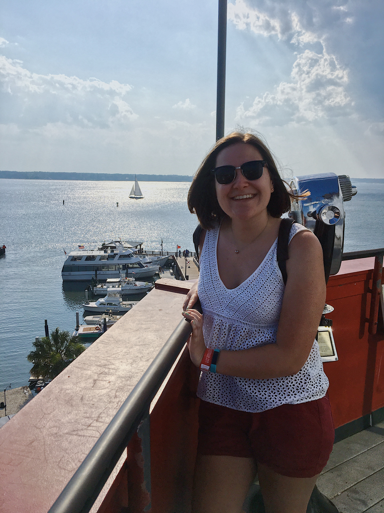
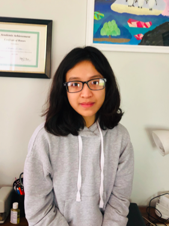
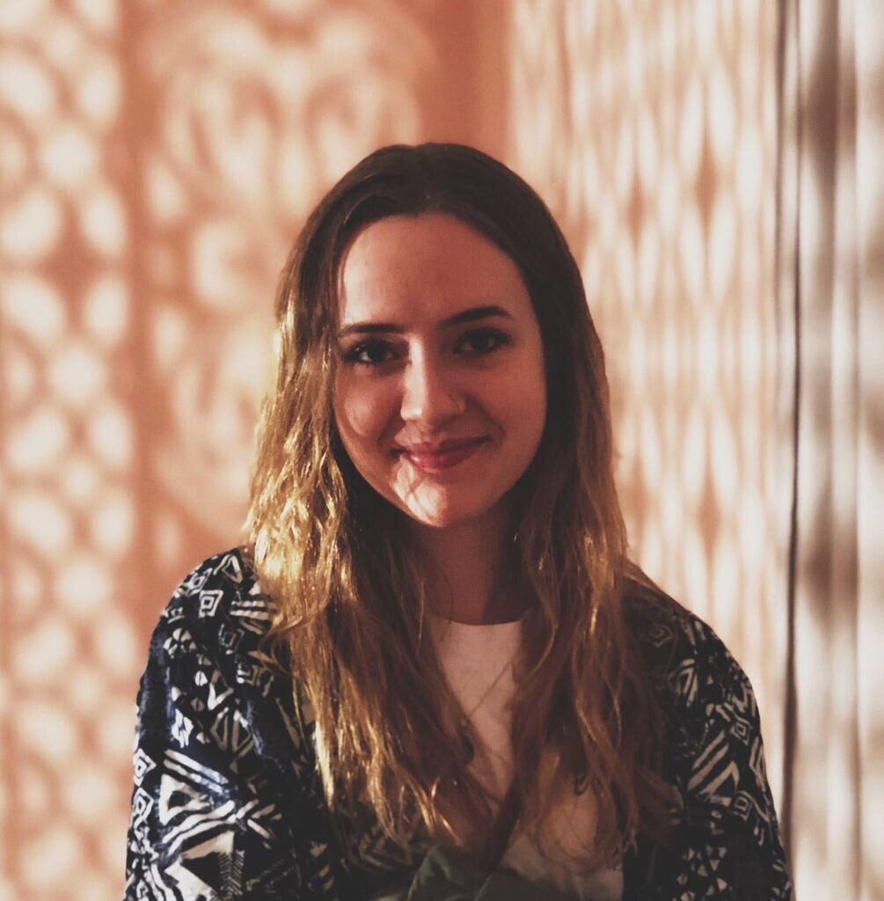
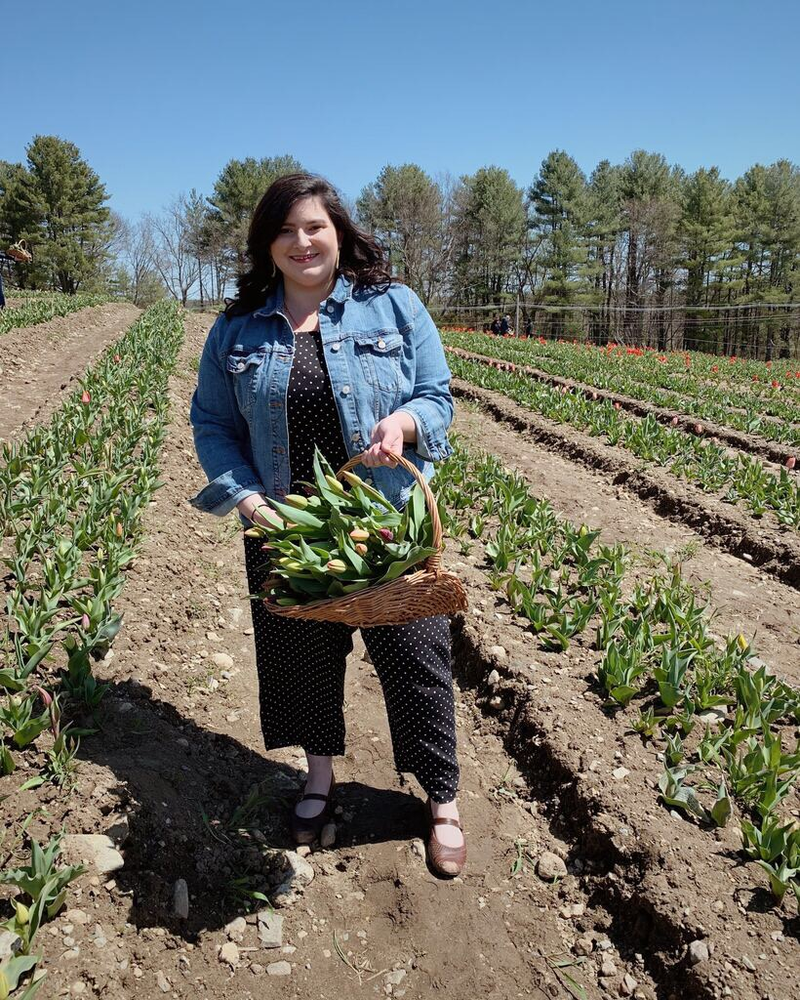
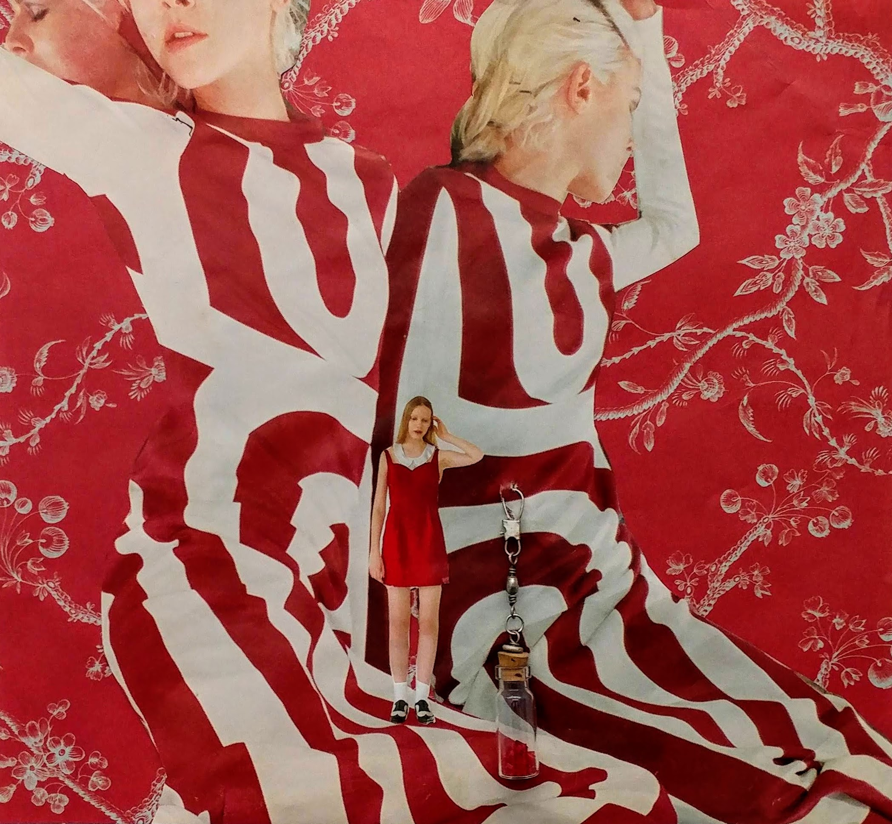
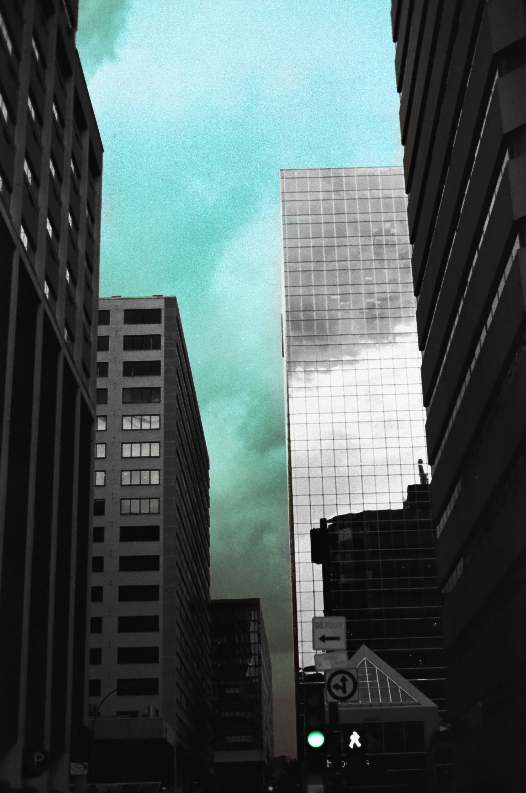
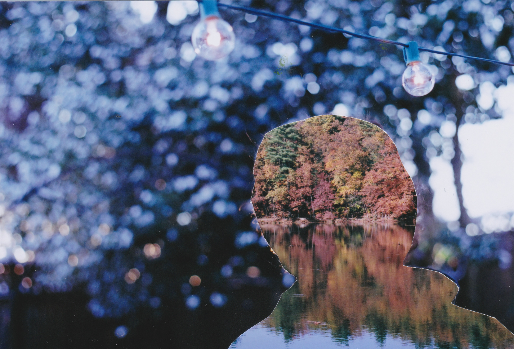

Jabberwocky
University of Massachusetts Amherst!
Mission
We are dedicated to showcasing the creativity and talent of writers, poets, and artists here at UMass. Our staff works together to publish the best pieces of criticism, fiction, media, nonfiction, and poetry in order to create a uniform publication that tells a unique story every year. Jabberwocky is constantly looking for new members to join and diversify our community. Feel free to reach out to us at umassjabberwocky@gmail.com!Executive and Head Staff
Editor-in-Chief: Sam Wong
Sam Wong is Jabberwocky’s friendly local Betazoid and resident email correspondent. Working with Jabberwocky this past semester has taught her a lot about Google Sheets and the most ardent labor that is creation. Should you encounter S.X. in the wild, point to nothing in particular and tell her it’s Katee Sackhoff, and then make your escape while she’s distracted.
Managing Editor: Emily Bevacqua
Emily Bevacqua is Jabberwocky’s biggest fan. She is the mastermind behind many of our instagram’s quality memes (give us a follow @umassjabberwocky) as well as the woman behind all the emails. When she isn’t trying to spread the love, Emily continues her meme obsession by sending memes all day, every day. She also can be seen frolicking through the field across from CHC, frantically eating ice cream as it drips all over her at Flavors, or hiding from life’s responsibilities in the Writing Center.
Associate Editor: Vanan Phan
Vanan Phan is a UMass junior with a certification in daydreaming and walking into walls. After being forced to read some of the most snooze worthy academic literature, she re-discovered her love for reading any book that isn't mandatory. She believes that it is within the pages of books that people are truly able to connect and grow with one another.
Fiction Head Editor: Meghan Clark
Meghan Clark is a writer of short stories who knows very little about her own inten- tions. She can be found reading Brautigan next to any dusty old window in any poorly heated building, fingernails turning blue.
Media Head Editor: Erin Alzapiedi
Erin Alzapiedi is a UMass senior clad in fishnets and ripped jeans with band tees and queen memes. In recent years, Erin has become an expert at loving her plants to their literal deaths. When she isn’t scribbling nonsense on paper, she can be found running around in the dark snapping photos of musicians who can play instruments infinitely better than she can. She is grateful for a marvelous three years on the Jabberwocky staff and as she ventures out into the world she hopes she is lucky enough to meet more creative individuals to help keep life unusual.
Poetry Head Editor: Lily McGlynn
Lily McGlynn is an anti-capitalist reader, writer, and former horse girl. When she is not doting over her cat, she can be found cackling over political theory memes and Mariah Carey compilations with her roommates. She dreams of unplugged landlines, tiny houses in the woods, and artful ways to destroy her copy of Infinite Jest. She prefers email.


